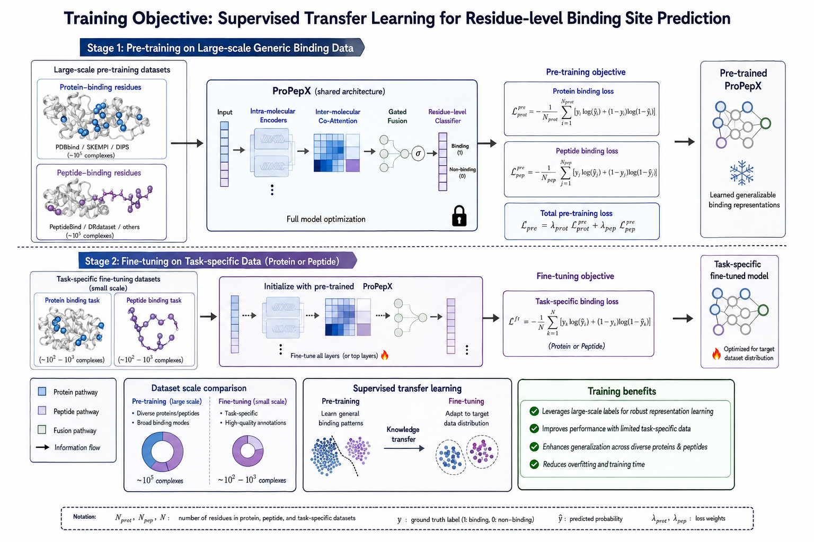
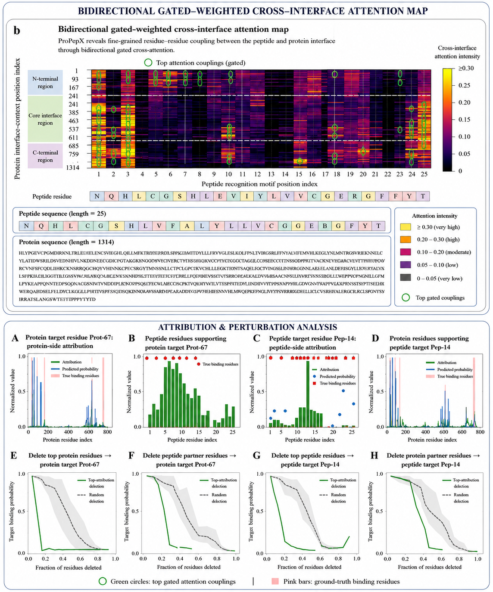

Unified prediction
Protein-side and peptide-side residue predictions are learned in one shared architecture.
Nature Machine Intelligence · Research Project Page
ProPepX is an interpretable bidirectional interaction-aware transfer learning framework for joint residue-level prediction of peptide-binding residues on proteins and protein-binding residues on peptides.
Scientific animation. Sequence-to-interface reasoning through PLM embeddings, cross-attention, gated fusion, and residue-level prediction.
Scientific rationale
Protein–peptide binding sites emerge from reciprocal recognition between molecular partners. ProPepX therefore models both partners together, allowing protein residues to attend to peptide motifs and peptide residues to attend to protein interface context.
Protein-side and peptide-side residue predictions are learned in one shared architecture.
Bidirectional cross-attention converts individual sequence embeddings into interaction-aware residue representations.
Large-scale pretraining transfers generalizable recognition knowledge to smaller task-specific datasets.
Transfer-learning workflow
Stage 1 learns broad protein–peptide recognition principles from large-scale labeled interaction data. Stage 2 fine-tunes the pretrained model for protein-side or peptide-side residue-level binding-site prediction.

Architecture
ProPepX integrates PLM embeddings, multi-scale convolutional motif extraction, transformer contextual encoding, bidirectional cross-attention, gated fusion, and residue-level classification.
Protein and peptide sequences are projected into contextual residue representations.
Local motifs and long-range sequence dependencies are captured before partner exchange.
Protein↔peptide attention learns residue–residue coupling across the interface.
Self features and partner-aware cross features are adaptively integrated.
Binding probabilities are generated for every protein and peptide residue.
Animated model narrative
Use the video as the visual centerpiece of the project page. It explains the complete ProPepX story: input molecular partners, learned interaction representations, residue-level prediction, and interpretable interface evidence.
Benchmark evidence
ProPepX maintains strong residue-level discrimination across protein-side, peptide-side, joint prediction, and zero-shot evaluation protocols.
Interpretability
ProPepX provides bidirectional gated-weighted attention maps, attribution profiles, and perturbation curves that explain which partner residues support each binding-site decision.

Why ProPepX matters
Mechanistic interpretation of peptide recognition
Joint protein-side and peptide-side interface discovery
Improved learning with limited task-specific annotations
Generalization across heterogeneous protein–peptide complexes
Resources
Citation
Naqvi, S. K. H., Chandra, S., Chong, K. T. & Tayara, H. ProPepX: A unified framework for interpretable bidirectional interaction-aware transfer learning in joint residue-level protein–peptide binding-site prediction.